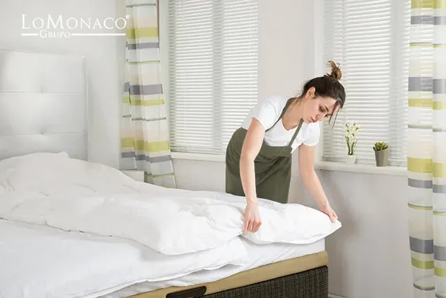

Cómo mantener tu cama limpia

Cómo limpiar y mantener mi colchón Lo Monaco
Como recomendación general, lo ideal es al levantarnos por la mañana, dejar abierta la ventana 15 ó 20 minutos y sacudir y ahuecar la funda exterior de nuestro colchón. También podemos fijarnos atentamente, si existen pequeñas motas de polvo acumuladas en los recovecos de la funda, que podemos retirar pasando suavemente por la zona con un paño seco o un cepillo de cerdas blandas.
Los colchones de Grupo Lo Monaco, están compuestos de un núcleo y dos fundas (una interior y otra exterior). Esta funda interior, dada la protección exterior con la que cuenta el colchón, se recomienda no manipularla en exceso, ya que no es necesario. Es recomendable, independientemente del material en qué está fabricado el núcleo (látex, muelles, viscoelástica o espumación HR) se recomienda voltear de pies a cabeza (tipo en el sentido de las agujas del reloj) y con una mayor periodicidad, abrir la funda y voltear el interior (núcleo) del colchón.
Una práctica más que recomendable es el uso de un cubre colchón ya que protegemos la superficie del colchón de vertidos de líquidos, polvo, sudor y humedad.
Limpieza de la almohada
La funda de la almohada, es uno de los elementos de la cama dónde más sustancias se acumulan, y esto nos puede llegar a ocasionar problemas en nuestra salud. Las almohadas de Grupo Lo Monaco, incorporan una funda lavable, que puede ser recomendable lavar, una vez cada cambio de estación.
Pero además, puedes utilizar un cubre almohada, un buen aliado para aislar la almohada de la acumulación de pieles muertas y polvo.
Mantenimiento de bases tapizadas, somieres y canapés abatibles
La superficie sobre la que reposa el colchón, ya sea una base tapizada, un somier o un canapé abatible, debe permanecer también impecable para contribuir a la higiene del equipo de descanso.
Si se trata de un somier, nada más simple que, a la hora de girar el colchón, aprovechar y pasar por láminas y patas, un trapo seco y retirar el polvo. Con respecto a la base tapizada (que puede ser la del canapé) podemos sacudir con un trapo seco o cepillar.
En cuanto al cajón del canapé, para asegurarnos que todo lo que guardamos en el mismo quede limpio y en perfectas condiciones, debemos pasar con cierta periodicidad un trapo húmedo por sus esquinas, paredes y fondo. En cuanto al exterior del cajón, utilizaríamos la misma metódica, pasaríamos un trapo levemente húmero. Además, si nuestro canapé tiene patas, nos resultaría mucho más fácil limpiar por debajo del mismo.
Cabeceros
Igual que en el mantenimiento de la base y el canapé, en el caso de los cabeceros Lo Monaco, se da con un trapo húmedo por toda su superficie. Así, mantenemos en perfectas condiciones la polipiel que conforma la superficie del cabecero. Debemos prestar especial atención a las costuras del mismo, sobre todo en el caso de un cabecero abotonado: aplicaríamos con mayor intensidad en estos espacios para quitar el polvo de forma efectiva.
Accesorios para un descanso saludable
No hay ninguna sensación comparada a la de meterse en una cama limpia y confortable. Esta experiencia sin duda la aportan nuestras sábanas y ropa de cama.
El juego de sábanas, además de darnos confort a la hora de dormir, también proporciona higiene, ya que protege de forma individual los elementos de nuestro equipo de descanso. Para conseguir una higiene plena ¿cuándo debemos lavar el juego de sábanas? Se recomienda hacerlo una vez por semana y preferiblemente a altas temperaturas, para asegurar la higiene total.
Edredones, mantas, cubre colchones y cubre almohadas, debemos lavarlos una vez al cambio de la temporada, siguiendo las recomendaciones del fabricante.
Nuestra cama, la usamos durante al menos ocho horas, 7 días a la semana y casi 365 días al año y la compartimos solo con los más “íntimos”. Podríamos decir que ésta es “personal e intransferible” ¿No crees que se merece un mantenimiento especial si quieres que se conserve siempre como el primer día?